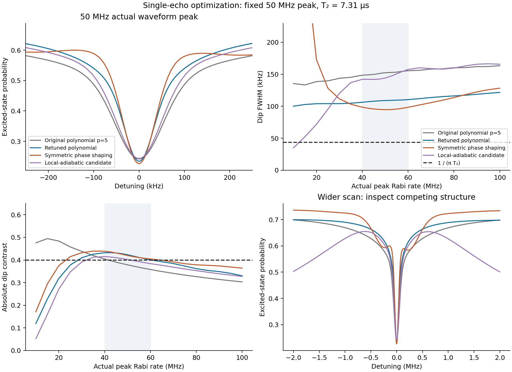
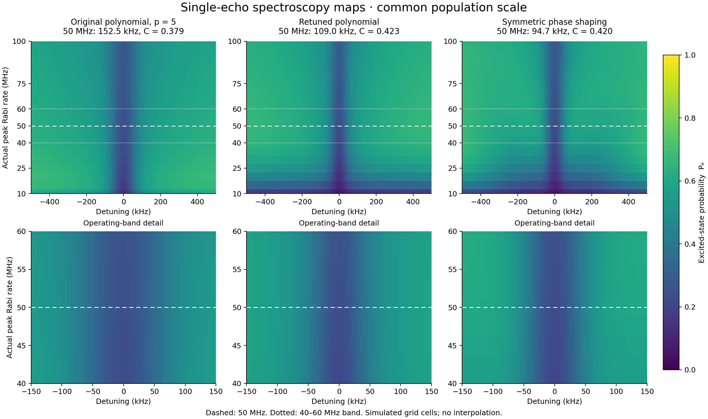
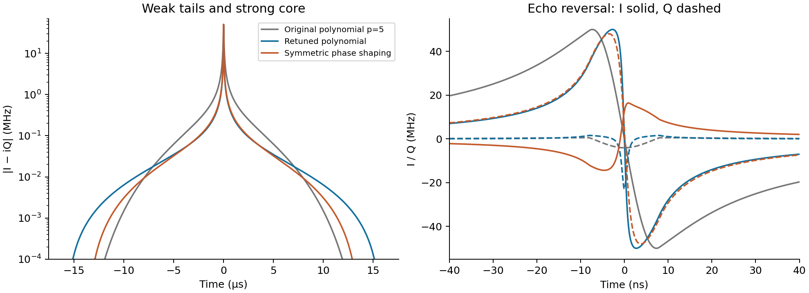

1 November 2026. Local simulations only.
Every main comparison has an actual maximum |I−iQ| of 50 MHz, one echo reversal, and no inserted free-evolution interval. Robustness was optimized on 40, 45, 50, 55, 60 MHz and checked at 2.5 MHz spacing. The wider amplitude scan explicitly shows the limits outside that band. Model: three-level Duffing Lindblad, T₁=51.24 µs, T₂=7.31 µs, α/2π=−216 MHz; independent four-/five-level checks are in results.json.
| Shape | FWHM at 50 (kHz) | Contrast at 50 | Min C, 40–60 | Max width, 40–60 (kHz) |
|---|---|---|---|---|
| Original polynomial p=5 | 152.48 | 0.379 | 0.358 | 155.59 |
| Retuned polynomial | 108.97 | 0.423 | 0.400 | 110.38 |
| Symmetric phase shaping | 94.71 | 0.420 | 0.405 | 98.58 |
| Local-adiabatic candidate | 144.14 | 0.402 | 0.384 | 157.60 |

The retuned polynomial and symmetric phase-shaped echo are shown alongside the original p=5 control. Each column keeps its pulse shape fixed while sweeping the actual peak Rabi rate. The top row spans 10–100 MHz and ±500 kHz detuning; the bottom row zooms into the 40–60 MHz operating band and ±150 kHz detuning. All six panels share the same 0–1 excited-state population color scale. Dashed lines mark 50 MHz; dotted lines on the full maps mark 40 and 60 MHz.

These are the saved three-level simulation values, displayed without interpolation. Detuning spacing is 2.5 kHz; amplitude spacing is 2.5 MHz inside 40–60 MHz and 5 MHz elsewhere. This addition does not introduce new simulations or extend the validation range.
PDF · SVG · Map provenance · Underlying arrays
Reproduce this addition after generating the base report: .venv/bin/python scripts/plot_50mhz_echo_maps.py.
The endpoint correction removes a finite drive jump, but a global (1−(2t/L)²)ᵖ taper also redistributes the useful weak tail. Pulse length and pulse-envelope width are not the detuning-sensitive interrogation time. For a real two-level echo, θ(t)=∫ΩI(s)ds and S=∫sinθ(t)dt give Pₑ(Δ)=Δ²S²/4+O(Δ⁴). Rapid rotations contribute with alternating signs. Increasing L at fixed cutoff also increases the root-Lorentzian core width σ=Lc/(2√(1−c²)); it is not simply extending an unchanged tail.
A polynomial edge behaves as Ω≈b sp+1, where s is distance from the endpoint. Rescaling the local Schrödinger equation gives a characteristic edge scale Δedge∝b1/(p+2). A high p can weaken amplitude dependence while still having a larger absolute linewidth. This scaling is not a full dissipative FWHM formula.
Let the complex control be u(t)=A g(t)s(t)exp[iφ(t)], with g and φ even and the echo sign s odd. Then u(−t)=−u(t). In an ideal resonant two-level system, the second half is the inverse of the first: U(0,A)=identity for every global A, even when the instantaneous control axes do not commute. This preserves the amplitude-independent resonant cancellation and permits optimization of the off-resonant response through φ(t). It does not guarantee constant linewidth or contrast, and multilevel terms, DRAG, and dissipation break the ideal cancellation.
This study tests φ(t)=φ₀ exp[−(t/τφ)²], with the derivative correction applied to the complete complex waveform. It is a concrete tested extension of the scalar envelope. The limited search does not establish that phase shaping reaches the coherence reference.
Controlled comparison: keeping this candidate's envelope parameters fixed and switching off the phase modulation gives 117.76 kHz and contrast 0.463, with the actual peak again normalized to 50 MHz.
A separate local-adiabatic candidate uses |dΩ/dt|∝(Ω²+Δ*²)3/2/|Δ*|, inspired by fast quasiadiabatic dynamics. Its regularized tail did not outperform the selected retuned polynomial in this search. That method controls the time spent near Ω≈Δ*, but it does not remove the dephasing cost of making the qubit sensitive to detuning. Mihov and Vitanov analyze power narrowing and cutoff broadening; their ideal asymptotic result is not a dissipative linewidth guarantee for this echo.
1/(πT₂) is the weak-drive homogeneous Lorentzian FWHM. It is a reference, not a universal bound on the FWHM of a transient interference dip. A very narrow dip with tiny contrast or large competing fringes does not meet the present objective. The model treats the supplied T₂ as Markovian; it does not justify replacing it by the measured echo coherence time. Slow frequency noise and a DC detuning signal act through the same operator, so protecting against one may also suppress the desired frequency response.
The original 50 MHz nominal scale peaks at 44.53 MHz after echo smoothing. Unnormalized optimization can reduce that peak further by shrinking the core. Those historical-convention comparisons are recorded separately in results.json; they are not used to claim a fixed-peak improvement.

{
"baseline": {
"duration_us": 30.0,
"cutoff": 0.001,
"power": 5.0,
"transition_us": 0.016,
"drag_beta": -0.5,
"anharmonicity_mhz": -216.0
},
"retuned": {
"duration_us": 31.901278320784403,
"cutoff": 5.571060939955552e-05,
"power": 1.0013692230338123,
"transition_us": 0.016,
"drag_beta": -0.5,
"anharmonicity_mhz": -216.0
},
"phase": {
"duration_us": 27.681945163021936,
"cutoff": 0.00012148126644240747,
"power": 1.373018937798303,
"transition_us": 0.016,
"drag_beta": -0.5,
"anharmonicity_mhz": -216.0,
"phase_rad": -1.8543341745279704,
"phase_scale_us": 0.7996939165673144
},
"local_adiabatic": {
"duration_us": 28.43677695034196,
"cutoff": 0.001,
"power": 5.0,
"transition_us": 0.016,
"drag_beta": -0.5,
"anharmonicity_mhz": -216.0,
"tail_scale_mhz": 0.352843453410727,
"tail_cap_mhz": 4.0401119135004455,
"core_us": 0.01504920344507306,
"edge_power": 4.7199755253256255,
"reference_rabi_mhz": 50.0
}
}
The phase candidate has a root-Lorentzian core σ=1.681 ns. Gaussian convolution of the complete I/Q waveform, followed by renormalization to a 50 MHz actual peak, gives the following illustrative results. These are not measured transfer functions. A 2 ns Gaussian standard deviation corresponds to a 66.3 MHz amplitude −3 dB bandwidth; 4 ns corresponds to 33.1 MHz. A sufficiently narrow hardware passband can erase the contrast margin.
| Filter σ (ns) | FWHM at 50 (kHz) | Contrast at 50 |
|---|---|---|
| 0 | 94.71 | 0.420 |
| 1 | 94.74 | 0.418 |
| 2 | 95.89 | 0.410 |
| 4 | 107.70 | 0.392 |
Filter details and 40/50/60 MHz checks. Full hardware transfer-function calibration remains necessary.
Run scripts/optimize_50mhz_echo.py with --family polynomial or phase --normalization peak, then scripts/report_50mhz_echo.py. The report also uses the nominal selective and phase searches; use --normalization nominal to reproduce those. The random seed is 20261101. The objective penalizes contrast below 0.405, additional minima with prominence above 0.01, and center offsets above 2 kHz. Selection then requires C≥0.4 at all five training amplitudes. The peak local-adiabatic row rescales the best nominal candidate; it is not a separate peak-constrained optimization.
Focused validation: 32 tests passed and all added Python files pass Ruff. Full pytest is blocked by missing torch; excluding that module gives 217 passes and one unrelated existing Figure 3 plotting failure. Repository-wide lint has 692 existing findings. See validation commands and limitations.
Exact metrics, numerical checks, and source hashes · Population arrays · Vector figure